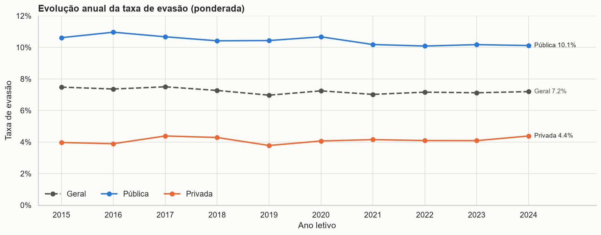
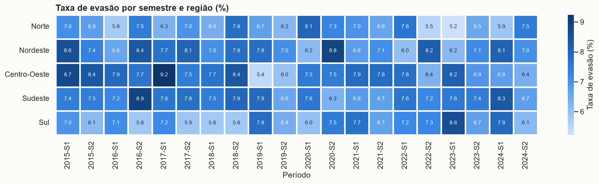
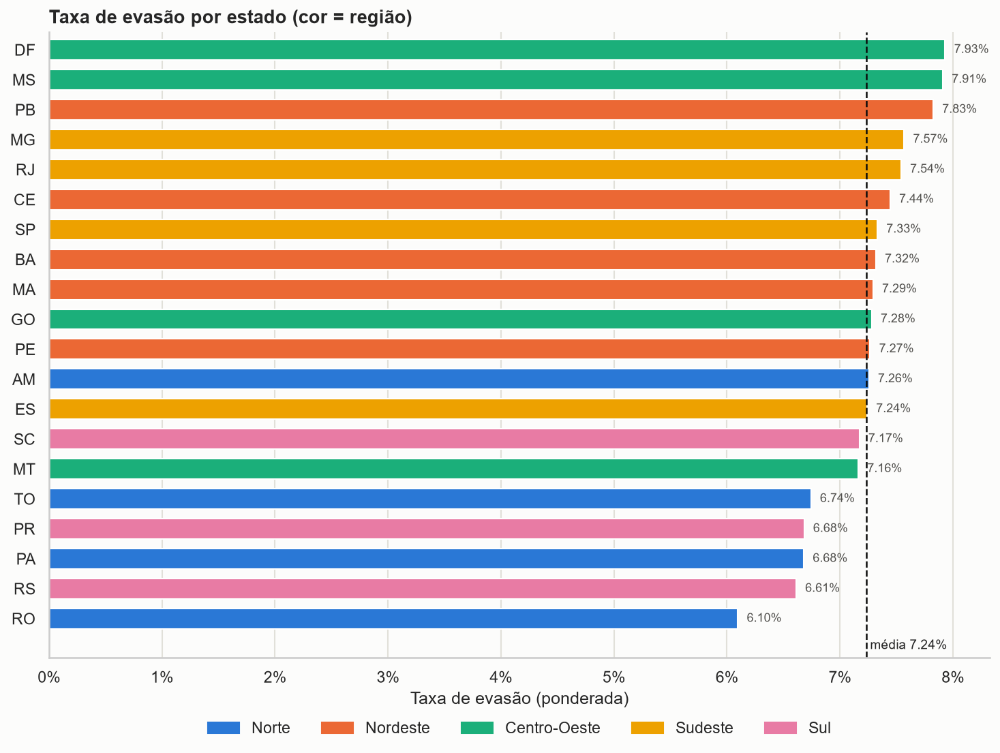
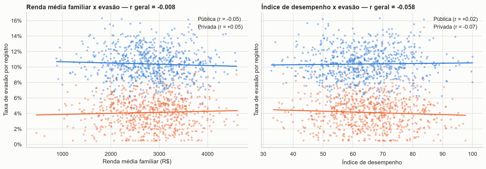

Sobre o projeto
A evasão escolar é um dos principais desafios da educação brasileira, com impacto direto sobre empregabilidade, desigualdade econômica, qualidade da educação e inclusão social. Este projeto investiga os padrões de evasão no ensino médio entre 2015 e 2024 a partir de uma base simulada com 1.480 registros semestrais de 37 municípios em 20 estados, separados por rede de ensino e série.
O trabalho cobre o fluxo completo de um projeto analítico: tratamento dos dados, engenharia de atributos, integração com a API do IBGE, persistência em banco relacional, análise exploratória, KPIs, visualizações, dashboard interativo e publicação.
Perguntas orientadoras
- Quais estados apresentam maior evasão escolar?
- Existem regiões mais vulneráveis?
- A evasão aumentou ou diminuiu ao longo do tempo?
- Há diferenças entre escolas públicas e privadas?
- Existe relação entre renda e evasão?
- Quais séries apresentam maior abandono?
- Quais fatores parecem mais associados ao problema?
Indicadores-chave
Principais resultados
A desigualdade entre redes é o maior achado
A rede pública perde 10,43% dos alunos contra 4,12% na privada, em todos os anos, regiões e séries. Todos os registros em risco crítico estão na rede pública.

Queda lenta ao longo da década
A taxa geral caiu de 7,48% (2015) para 7,20% (2024), uma tendência de −0,039 p.p. por ano. O menor valor foi em 2019 e 2020, ano da pandemia, interrompeu a melhora.

Diferenças regionais moderadas
Entre estados, a amplitude é de 1,83 p.p. (DF 7,93% contra RO 6,10%). Estados da mesma região aparecem espalhados pelo ranking: a desigualdade regional existe, mas pesa bem menos que o tipo de escola.

Renda não explica a evasão nesta base
A correlação entre renda e evasão é desprezível (r = −0,008), e o desempenho acadêmico tem associação fraca e inconsistente entre as redes. O fator dominante é a rede de ensino (r = 0,84).

Dashboard interativo
O dashboard em Streamlit tem 7 páginas e filtros globais por ano, semestre, região, estado, rede de ensino, série e nível de risco. Todos os KPIs, gráficos e textos interpretativos se atualizam com o recorte escolhido.
Visão geral
Descrição do problema, 8 KPIs dinâmicos e destaques do recorte.
Evolução temporal
Linha temporal, tendência linear, heatmap semestral e série interativa.
Regiões e estados
Mapa interativo com malha do IBGE, ranking estadual e comparação regional.
Redes e séries
Pública × privada, boxplot, barras por série e níveis de risco.
Fatores associados
Dispersão, correlação de Pearson/Spearman com p-valor e matriz de correlação.
Explorar dados e SQL
Tabela dinâmica, consultas SQL no SQLite e download da base filtrada.
Conclusão executiva
Respostas às perguntas orientadoras, recomendações e limitações.
Funcionalidades implementadas
| Funcionalidade | Como foi feita |
|---|---|
| Consumo de API | Requests na API de dados do IBGE: estados (nome oficial, código) e malha geográfica das UFs, com cópia local de contingência. |
| Persistência em banco | SQLite gerado com SQLAlchemy a partir da base tratada. |
| Modelagem relacional | ORM com 4 tabelas: regiões → estados → municípios → indicadores de evasão. |
| Dashboard multipágina | st.navigation com 7 páginas e filtros globais compartilhados. |
| Mapas interativos | Mapa coroplético com Plotly e GeoJSON do IBGE. |
| Séries temporais e correlação | Tendência por mínimos quadrados (NumPy), média móvel, variação anual, Pearson/Spearman com p-valor. |
| Integração de múltiplas fontes | CSV + API do IBGE + banco SQLite. |
| Interatividade | 7 filtros, upload de CSV, tabela dinâmica configurável, editor SQL somente leitura e downloads. |
Tratamento dos dados
- 16 taxas de evasão corrigidas: não batiam com evasões ÷ matriculados e foram recalculadas.
- 2 índices de desempenho ajustados: valores acima de 100 limitados ao intervalo válido.
- Verificação de nulos, duplicados e registros impossíveis (nenhum encontrado).
- Taxas agregadas sempre ponderadas pelas matrículas, e não pela média simples dos registros.
- Novos atributos: período semestral, permanências, quartis de renda/desempenho/internet, nome e código IBGE.
Tecnologias utilizadas
- Python
- Pandas
- NumPy
- Matplotlib
- Seaborn
- Plotly
- Streamlit
- SQLAlchemy
- SQLite
- Requests
- API IBGE
- GitHub Pages
Arquivos do projeto
projeto-evasao-escolar/ ├── app.py # entrada do dashboard (dados, filtros, navegação) ├── paginas/ # 7 páginas do dashboard ├── src/ # limpeza, API IBGE, banco, KPIs e gráficos ├── requirements.txt ├── README.md ├── index.html # esta página ├── css/style.css # estilos da página ├── dados/ # CSV original, CSV tratado e cache do IBGE ├── database/ # evasao_escolar.sqlite ├── notebooks/ # analise_evasao_escolar.ipynb └── imagens/ # gráficos exportados pelo notebook
Conclusão
A evasão no ensino médio é um problema persistente e concentrado na rede pública: a taxa caiu menos de 0,3 p.p. em dez anos, e a diferença entre redes (cerca de 6 p.p.) é muito maior que as diferenças entre estados, regiões ou séries. Políticas de permanência devem priorizar a rede pública, especialmente o 1º ano, com monitoramento semestral. Como renda e acesso à internet não explicam a variação, vale investigar outros fatores, como trabalho juvenil, distância até a escola e infraestrutura.
Base de dados simulada, usada para fins educacionais. Correlação não implica causalidade.